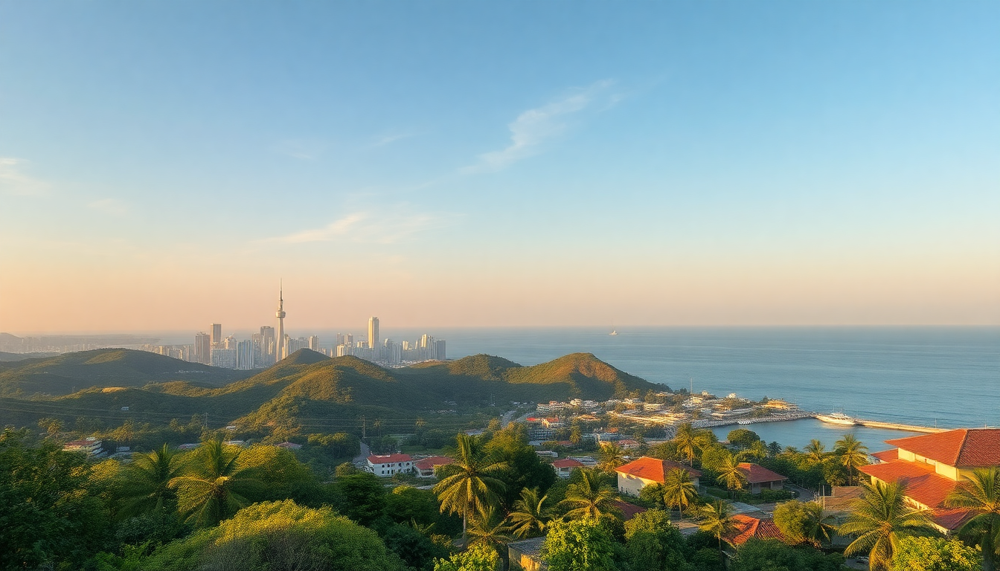

Where to Stay in Male: Best Neighborhoods for Every Budget

Most travelers treat Male as a layover—a night before the speedboat to a resort or a few hours between flights. I did the same until I spent three days actually exploring the city. The capital is chaotic, cramped, and surprisingly walkable. Where you sleep here matters less for “vibes” and more for logistics: how close you are to the airport ferry, whether you can find a decent meal at 10 PM, and if your guesthouse has air conditioning that actually works. Here’s what I found after testing six different neighborhoods.
What’s the difference between Male, Hulhumale, and Villingili?
First, a quick geography lesson. Male City proper sits on a single island (Malé Island). Hulhumale is a reclaimed island connected by a bridge—about 15 minutes by taxi or bus. Villingili is a separate island, a 10-minute ferry ride away. Most budget travelers end up in Hulhumale because guesthouses are cheap and the airport is close. I made that mistake: Hulhumale is sterile and feels like a dormitory suburb. If you want actual Maldivian street life, stay on Male Island itself.
- Male Island: Real city energy, fish market at dawn, narrow alleys packed with scooters.
- Hulhumale: Cleaner, quieter, newer. Good for sleeping, boring for exploring.
- Villingili: Local island vibe, no cars, mostly residential. I’d skip it unless you have friends there.
Is Hulhumale the best budget option?
Yes, if your only goal is catching an early flight. I paid $45 a night at Samann Hostel in Hulhumale—clean dorm, decent WiFi, but the neighborhood felt like a construction site. The beach here (Hulhumale Beach) is artificial but swimmable, which is more than you get in Male proper. The Hulhumale Bridge connects to Male by bus (route 101, 20 minutes, $0.50). For food, Sala Thai Restaurant on the main road serves cheap pad thai that beats most resort buffets.
- Pros: Cheapest rooms in the region, 10 minutes from Velana International Airport by taxi, 24-hour convenience stores.
- Cons: Soulless grid streets, no nightlife, limited local culture.
- Best for: Budget solo travelers and transit passengers.
Where should I stay in Male for mid-range comfort?
Henveiru, the easternmost ward of Male, is where I found the best balance. It’s residential—think narrow lanes with laundry hanging between buildings—but walkable to the main ferry terminal. I booked Hotel Jen Male (part of Shangri-La’s brand) for $120 a night. The rooftop pool overlooks the harbor, and the breakfast buffet includes fresh roti and tuna sambol. This area is also where you’ll find Maafannu Market—a covered bazaar selling dried fish, spices, and cheap souvenirs.
- Hotel Jen Male: Reliable mid-chain, good for business travelers or couples.
- Maafannu Market: Open 6 AM–6 PM, haggle for chili paste and coconut oil.
- Nearby: The Grand Friday Mosque is a 5-minute walk, and Sultan Park offers shade for a midday break.
What’s the best neighborhood for first-time visitors to Male?
Maafannu (the central ward) is the tourist hub. It’s loud, crowded, and smells like diesel and frying fish—but that’s Male. I stayed at The Beehive, a boutique guesthouse with six rooms above a café. The owner, Ahmed, drew me a map of walking routes. From here, you can reach the Maldives Islamic Centre in 10 minutes and the Fish Market in 15. The downside? Traffic noise until midnight. Bring earplugs.
- The Beehive: $80–100 per night, includes breakfast, book directly for better rates.
- Fish Market: Arrive at 6 AM to see tuna auctions, skip the tourist “dinner cruises” nearby.
- Pro tip: Avoid the Artificial Beach on weekends—locals pack it shoulder-to-shoulder.
Where do locals actually live in Male?
Villingili is the answer, but I wouldn’t recommend it for tourists. It’s a 10-minute ferry from Male (every 30 minutes, $0.30), and the island has no paved roads—just sandy paths and bicycles. I spent one night at Villingili Guesthouse ($60) and felt like I was intruding on someone’s family home. The beach is better than Hulhumale’s, but there are no restaurants, no shops, and the power went out twice. If you want authentic local life, take a day trip here, don’t sleep over.
Is Male safe for solo travelers?
Yes—Male is one of the safest cities I’ve visited in South Asia. I walked alone at midnight from Henveiru to Maafannu and never felt threatened. The main risks are traffic (scooters drive on the left, aggressively) and petty theft (keep your phone in a front pocket). Police are visible near the Republic Square and the ferry terminal.
FAQ
Is it better to stay in Male or on a resort island? Depends on your budget and time. Resorts cost $300+/night and include meals, but you’re trapped on the island. Male costs $40–$150/night, gives you street food and real interactions, but the beaches are poor. I’d do a resort for 3 nights and Male for 1 night on either end.
How do I get from Velana International Airport to Male? Take the public ferry from the airport jetty (runs every 15 minutes, 5 AM–midnight, $1.50). It drops you at the Male Ferry Terminal in 10 minutes. Avoid the speedboat taxis—they charge $25 for the same trip.
What’s the best time of year to visit Male? November to April is dry season—blue skies, calm seas. May to October has rain and humidity, but rooms drop by 40%. I visited in June and got two hours of rain daily, but the Maafannu Market was less crowded.
Conclusion
- Hulhumale is the cheapest option for transit, but boring for exploring.
- Henveiru offers mid-range comfort and quick access to the ferry terminal.
- Maafannu is the chaotic heart of Male—best for first-timers who want street life.
- Villingili is a local island worth a day trip, not an overnight stay.
- Book hotels directly after comparing on Booking.com—guesthouses often offer discounts for cash payments.